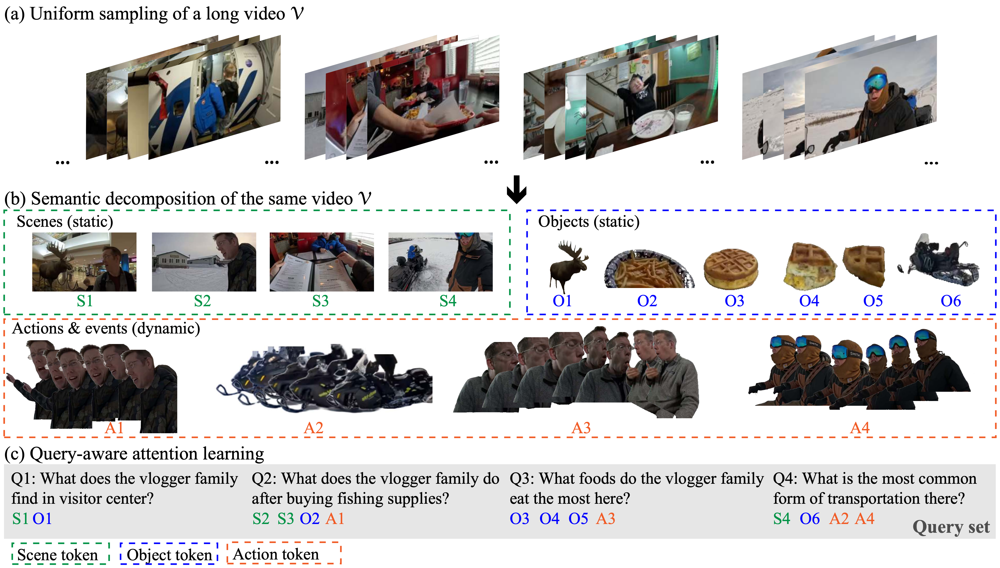
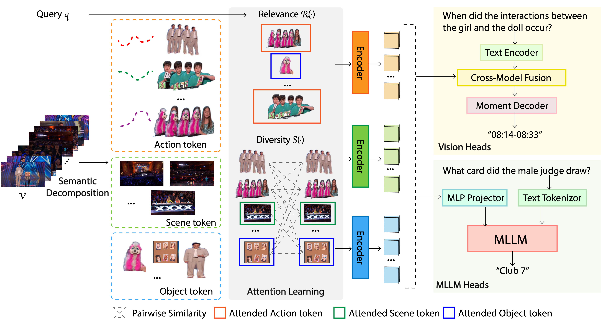
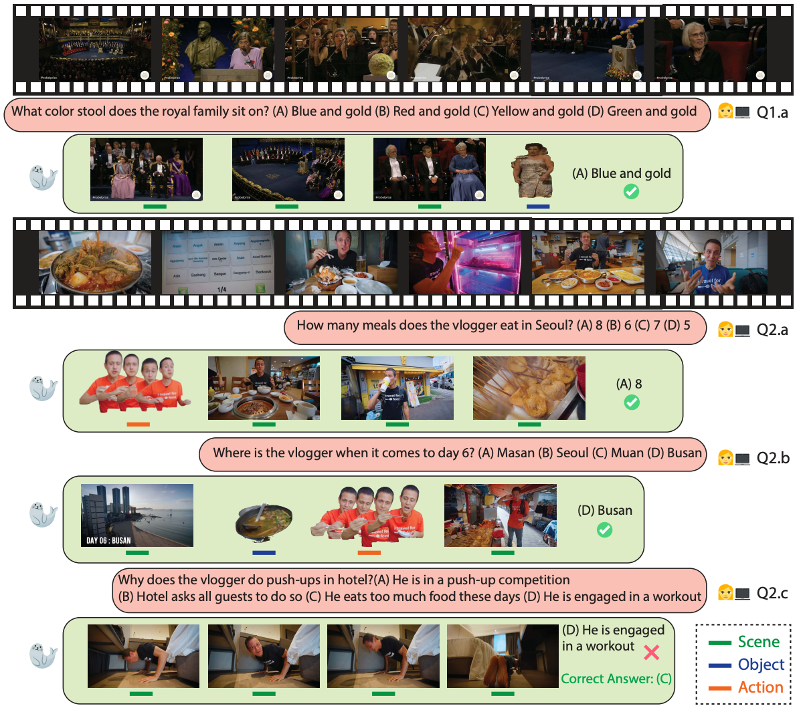

SEAL: Semantic Attention Learning for Long Video Representation
Lan Wang1,2 Yujia Chen2 Wen-Sheng Chu2
Vishnu Boddeti1 Du Tran2
1 Michigan State University 2 Google

[arXiv]
[Code]
**Long Video Representation with Semantic Attention Learning (SEAL):** Conventional uniform sampling results in redundant and cluttered visual information, making it difficult for both AI models and human brains to process efficiently. Decomposing long videos into semantic entities such as scenes, objects, and actions reduces temporal redundancy, thus making model training and inference more efficient. In this example, the long video **$\mathcal{V}$** is decomposed into 4 **scene tokens** (S1--S4), 6 **object tokens** (O1--O6), and 4 **action/event tokens** (A1--A4). A query-aware attention learning module improves downstream task performance by focusing on relevant information rather than processing everything, as shown with queries (Q1--Q4) and their most relevant tokens. *(Best viewed in color)*
Abstract
Long video understanding presents challenges due to the inherent high computational complexity and redundant temporal information. An effective representation for long videos must process such redundancy efficiently while preserving essential contents for downstream tasks. This paper introduces SEmantic Attention Learning (SEAL), a novel unified representation for long videos. To reduce computational complexity, long videos are decomposed into three distinct types of semantic entities: scenes, objects, and actions, allowing models to operate on a handful of entities rather than a large number of frames or pixels. To further address redundancy, we propose an attention learning module that balances token relevance with diversity formulated as a subset selection optimization problem. Our representation is versatile, enabling applications across various long video understanding tasks. Extensive experiments show that SEAL significantly outperforms state-of-the-art methods in video question answering and temporal grounding tasks and benchmarks including LVBench, MovieChat-1K, and Ego4D.
Method

During *semantic decomposition*, a long video **$\mathcal{V}$** is decomposed into semantic tokens representing scenes, objects, and actions. Then, during *attention learning*, these tokens and the query **q** are optimized for query relevance **R(⋅)** and token diversity **S(⋅)**. The resulting attended token subset is then passed to a vision or an MLLM head for predictions.
Qualitative Results

Two long videos visualized with questions, multiple choice options, and SEAL predicted answers. SEAL attends to relevant entities such as ``royal family'' and ``stool'' (Q1.a), different ``meals'' and ``drinks'' (Q2.a), ``scene'' and ``location'' (Q2.b) and correctly answers these questions. Although attending to relevant ``push-up'' activity (Q2.c), SEAL fails to predict the right answer due to the challenging in the causal reasoning question.